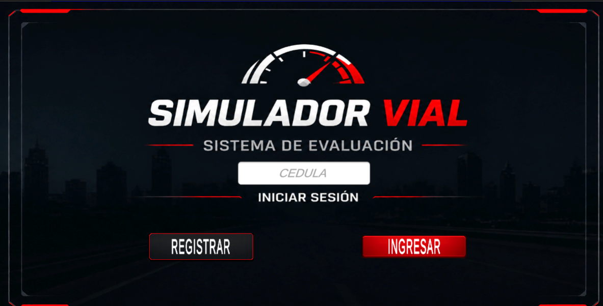
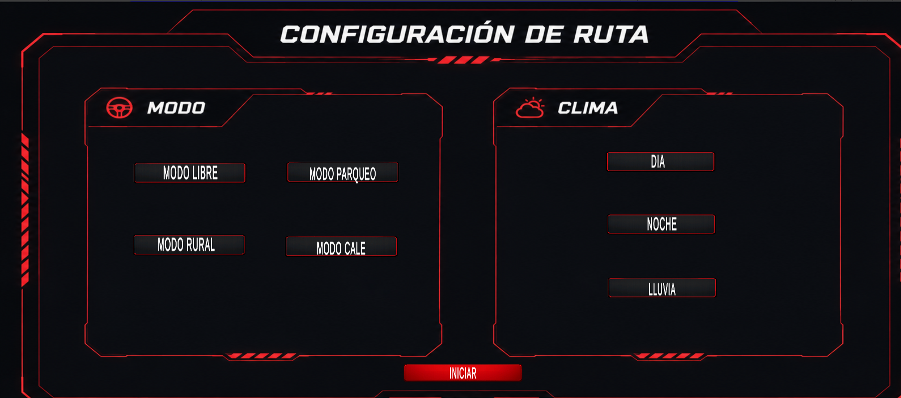
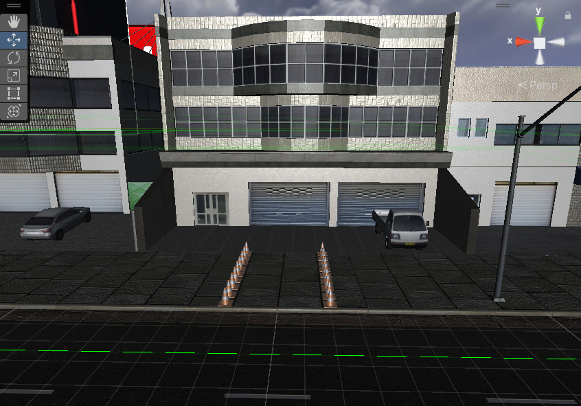
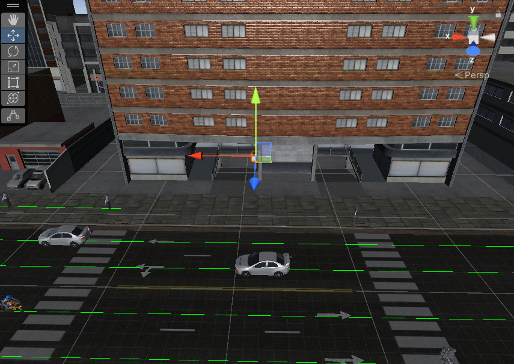
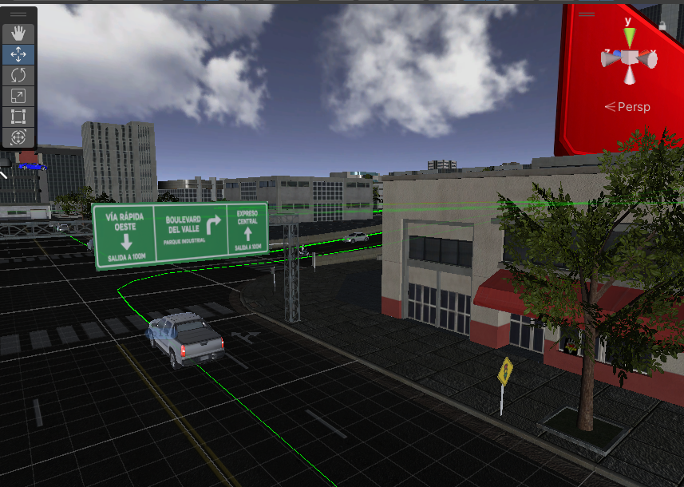
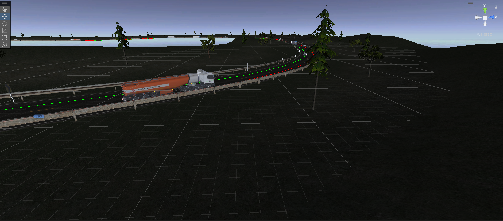
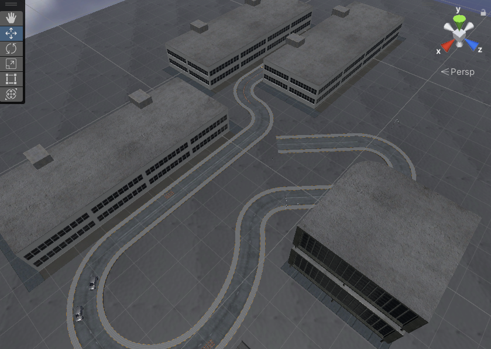
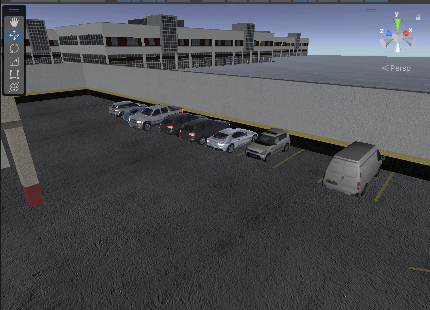
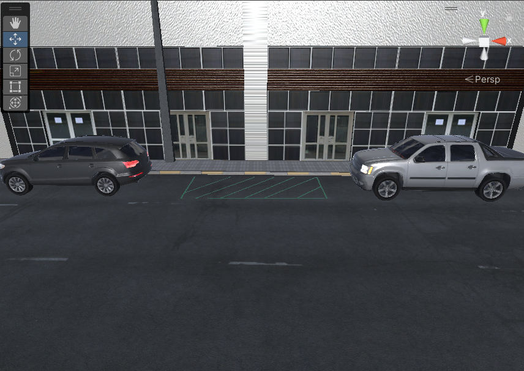

Guía completa para conductores en formación — controles, modos de práctica, infracciones y puntaje.
El Simulador CNN_FN es una aplicación 3D que recrea entornos viales reales donde practicas tu manejo y eres evaluado de forma objetiva. Detecta infracciones en tiempo real, lleva registro de tu puntaje y guarda los resultados en la nube vinculados a tu cédula.
Navega libremente por la ciudad. Sin ruta obligatoria — el objetivo es llegar a la zona de finalización respetando todas las normas.
Carretera interurbana de doble carril con tráfico pesado. Altas velocidades y señales de no adelantar.
Ciudad con tráfico IA completo: semáforos, peatones, conos, topes y vehículos autónomos. El más exigente.
Maniobras de parqueo paralelo y en reversa. Evaluación de precisión y número de maniobras.
| Componente | Mínimo | Recomendado |
|---|---|---|
| Sistema Operativo | Windows 10 (64-bit) | Windows 11 (64-bit) |
| RAM | 8 GB | 16 GB o más |
| Tarjeta Gráfica | GTX 1050 / RX 570 | RTX 3060 / RX 6700 |
| Almacenamiento | 25 GB libres | SSD con 30 GB+ |
| Motor Unity | 2022.3 LTS | 2022.3 LTS |
| Internet | Requerido (login y guardado) | Conexión estable |
| Periférico | Teclado y ratón | Logitech G27 |
01_LOGIN activa, presiona Play ▶.

| Clima | Descripción | Dificultad |
|---|---|---|
| Día | Iluminación normal, visibilidad completa | Básico |
| Noche | Iluminación reducida, farolas encendidas | Intermedio |
| Lluvia | Precipitación con efectos visuales | Avanzado |
| Acción | Procedimiento correcto | Error que cala el motor |
|---|---|---|
| Arrancar | N → Motor (E) → Clutch → 1ª → Soltar clutch despacio | Meter 1ª sin clutch |
| Subir marcha | Clutch → nueva marcha → Soltar clutch acelerando | Cambiar sin clutch a baja velocidad |
| Reversa | Frenar hasta parar → Clutch → R → Soltar clutch despacio | Presionar R directo sin clutch |
| Detenerse | Frenar → Clutch → Neutro → Soltar freno | Frenar con marcha sin clutch |
Los intermitentes funcionan como interruptores (toggle): presionas una vez para activar, otra vez para apagar.
Navega libremente por el entorno urbano 3D. Sin ruta obligatoria — el objetivo es llegar a la zona de finalización respetando todas las normas. Se evalúan todas las infracciones posibles.
El simulador coloca el carro en uno de 3 puntos que se alternan en orden. Cada conductor experimenta todos los puntos de forma equitativa.



| Infracción frecuente | Puntos | Cómo evitarla |
|---|---|---|
| Velocidad excesiva | –10 cada 3s | Respetar señales de velocidad máxima |
| Semáforo en rojo | –15 | Reducir al acercarse a semáforos |
| Sin intermitente al girar | –5 | Activar antes de cada giro |
| Motor calado | –5 | Usar clutch al cambiar marcha o detenerse |
| Intermitente olvidada | –5 | Apagar justo después del giro |


El modo más exigente. Circula por calles urbanas con tráfico IA completo: vehículos autónomos, peatones en movimiento, semáforos activos, conos y reductores de velocidad. Requiere máxima atención.


Estaciona dentro del espacio delimitado usando el mínimo de maniobras.
| Criterio | Descuento |
|---|---|
| Límite delantero tocado | –20 pts |
| Límite trasero tocado | –20 pts |
| Límite lateral tocado | –20 pts |
| Más de 4 maniobras (cambios reversa/adelante) | –10 pts |
Entra al espacio en reversa. Hay una zona invisible de peligro en el fondo — si la tocas, –30 puntos.
Todos los modos inician con 100 puntos. Cada infracción descuenta puntos. El puntaje nunca baja de 0. Al finalizar, se asigna la calificación según el puntaje final.
| Evento | Descuento | Puntaje |
|---|---|---|
| Inicio de prueba | — | 100 pts |
| Motor calado (×2) | –10 | 90 pts |
| Sin intermitente (×1) | –5 | 85 pts |
| Velocidad excesiva (×1) | –10 | 75 pts |
| Choque con cono (×1) | –3 | 72 pts |
| Resultado final | — | 72 → Bueno |
| Prioridad | Acción | Razón |
|---|---|---|
| Alta | Respetar semáforos y peatones | –15 pts cada vez, las más graves |
| Media-alta | Respetar límites de velocidad | –10 pts cada 3 seg, se acumula rápido |
| Media | Usar intermitentes en giros | –5 pts por giro sin señalizar |
| Normal | No calar el motor | –5 pts, evitable con práctica |
| Baja | Evitar conos | –3 pts, menor impacto |